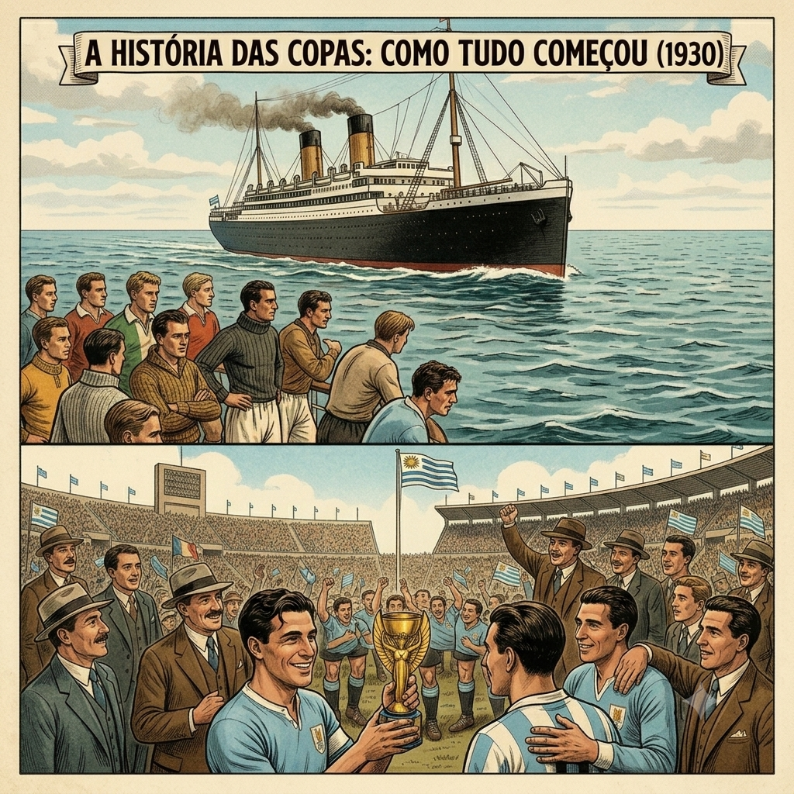
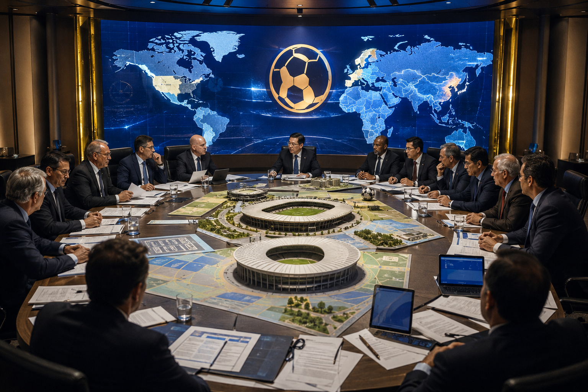
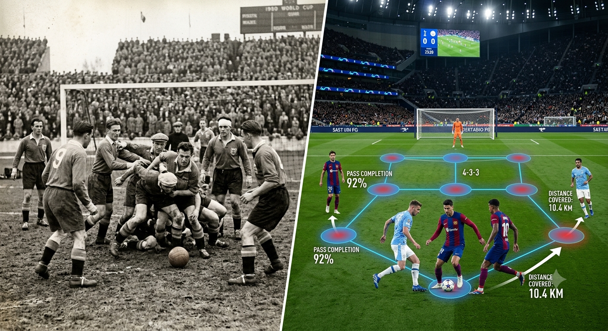
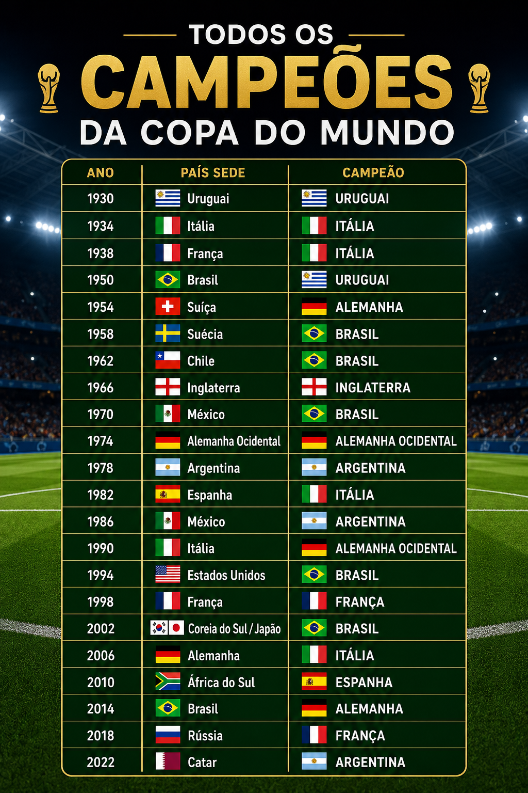

Copa Do Mundo E Sua Historia
A História das Copas: Como Tudo Começou
Sabe aquela reunião de condomínio que todo mundo acha que vai dar errado, mas acaba virando uma festa histórica? Foi mais ou menos assim que a Copa do Mundo nasceu. Em 1930, o presidente da FIFA, Jules Rimet, teve a audácia de organizar um torneio mundial. O destino escolhido? O Uruguai. O detalhe é que cruzar o oceano naquela época não era questão de duas horinhas de voo, e sim de semanas de navio. Algumas seleções europeias quase desistiram só de pensar no enjoo marítimo. No fim, apenas 13 países participaram, não teve nem fase de eliminatórias (quem quisesse ir, ia) e os donos da casa, os uruguaios, levaram a primeira taça para casa. Mal sabiam eles o tamanho do monstro competitivo que tinham acabado de criar!

Lendas e Recordistas do Torneio
Falar de Copa do Mundo sem citar os "donos do campinho" é um crime. Se hoje a gente debate se Messi ou Cristiano Ronaldo são os melhores, é porque homens como Pelé pavimentaram o caminho — o Rei do Futebol é o único humano a vencer três Copas (venceu a primeira com apenas 17 anos, idade em que a maioria de nós está só tentando passar de ano na escola). Mas a Copa também adora um recorde bizarro. Você sabia que o maior artilheiro em uma única edição é o francês Just Fontaine, que brocou 13 gols em 1958? E detalhe: ele jogou com a chuteira emprestada de um colega de equipe! Isso provando que o talento não está no "boot" caro, mas sim no pé.

Bastidores da Escolha do País-Sede
Se você acha que escolher o lugar do rolê com os seus amigos no fim de semana é difícil, imagine escolher o país que vai receber bilhões de pessoas. A escolha de uma sede da Copa do Mundo envolve política, economia e muita, mas muita conversa de bastidor. Para um país ganhar o direito de sediar o evento, ele precisa provar para a FIFA que consegue construir estádios futuristas, hotéis de luxo e sistemas de transporte que realmente funcionem (e não que pareçam o ônibus de linha na hora do rush). É um investimento gigantesco que pode transformar a economia de um país — ou deixar uma coleção de estádios "fantasmas" que ninguém mais usa depois que a festa acaba. É o famoso "o preço da fama".

Evolução Tática: Como o Futebol Mudou em Campo
Se você pegar umjogo da Copa de 1950 e comparar com um de hoje, vai parecer que está assistindo a dois esportes completamente diferentes. Antigamente, o futebol era quase um "todo mundo corre atrás da bola e seja o que Deus quiser". Os jogadores eram atacantes natos, e as defesas pareciam mais uma peneira. Com o tempo, técnicos geniais começaram a tratar o campo como um tabuleiro de xadrez. O Brasil de 1970 encantou o mundo jogando por música, enquanto a Holanda de 1974 inventou o "Carrossel", onde ninguém tinha posição fixa e os adversários ficavam tontos tentando marcar. Hoje, o futebol é uma mistura de atletismo de alta performance com algoritmos táticos. O jogador moderno precisa correr 12 km por jogo e ainda pensar na tática, senão vira banco rapidinho.

A Galeria de Campeões do Mundo
